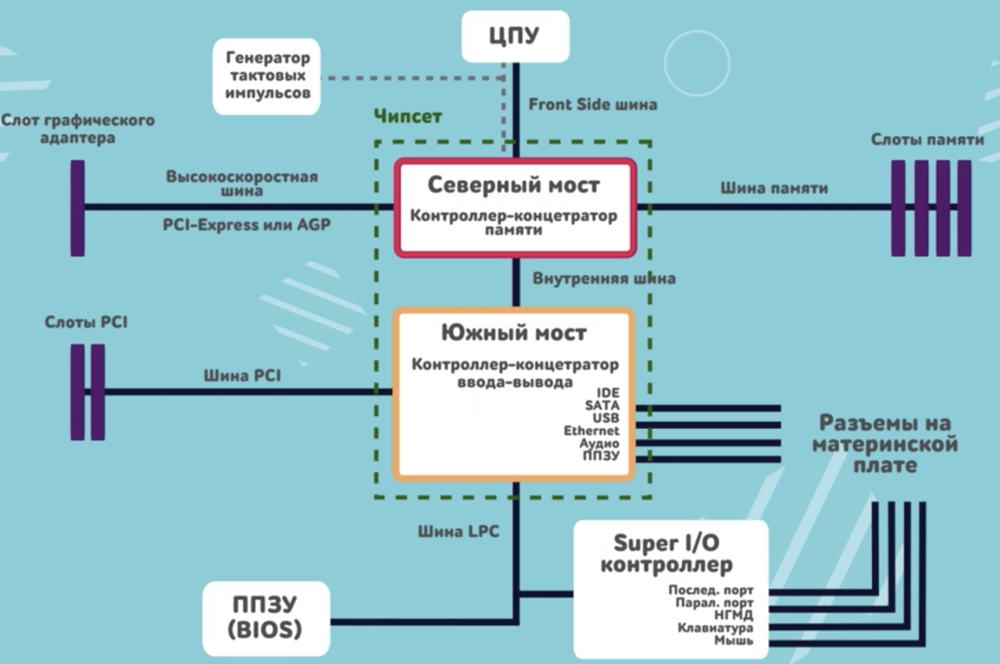
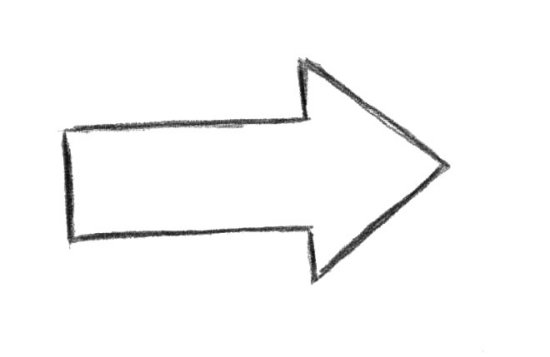

Материнская плата
Материнская плата - связующее звено между большинством элементом всего компьютера.

Различают северный и южный мосты материнской платы, соединённые между собой системной шиной.
Что связывает северный мост:
- Процессор
- Видеокарта
- Оперативная память
Что связывает южный мост:
- Жёсткий диск
- Сетевые карты
- Аудио карты
- И т.д и т.п.
Разбор материнской платы ASUS H110M-K, H110, Socket 1151, DDR4, mATX
- Производитель: ASUS
- Модель: H110M-K
- Версия чипсета: H110
- Тип сокета: Socket 1151
- Тип оперативной памяти: DDR4
- Форм-фактор: mATX
